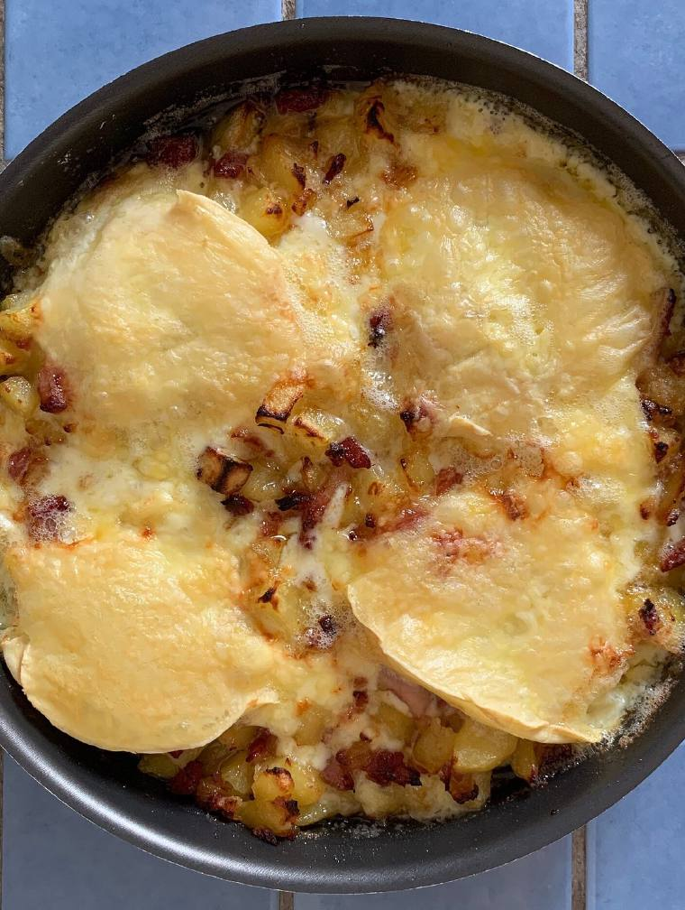

Cuisine française

Cuisine française
Tartiflette
Préparation : 30 min
Cuisson : 55 min
Ingrédients (pour 6 personnes)
- 1,3 kg de pommes de terre à chair ferme
- 1 reblochon d’environ 500 g
- 200 g de lardons
- 1 oignon
- 150 ml de vin blanc sec
- 200 ml de crème
- 1 gousse d’ail
- 2 cuillères à café de beurre
- sel
Quantités adaptées. Les temps de cuisson ne sont pas recalculés.
- Cuire les pommes de terre à l’eau salée, encore fermes, les égoutter.
- Dorer oignon et lardons dans la moitié du beurre, mouiller au vin, réduire, ajouter la crème hors du feu.
- Couper les pommes de terre en cubes et les rissoler dans le reste du beurre.
- Frotter le plat à l’ail. Étager pommes de terre, lardons et moitié du reblochon, finir par l’autre moitié, croûte dessus.
- Cuire 15 minutes à 200 °C, puis 5 minutes sous le gril si besoin.
D’après France.fr, agence nationale du tourisme. Texte reformulé.